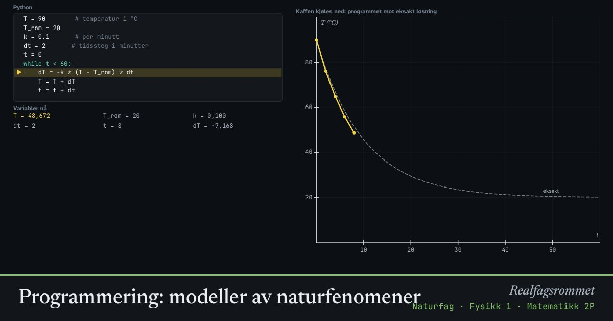

Programmering: modeller av naturfenomener
Mange naturfenomener endrer seg litt for hvert lille tidssteg. Et program kan regne ut endringen om og om igjen i en løkke. Se programmet kjøre linje for linje, og sammenlign med den eksakte løsningen.
Start animasjonen
Formler
Om animasjonen
Programmet bruker en while-løkke: Så lenge betingelsen er sann, gjentas de innrykkede linjene. Hver runde regner det ut hvor mye størrelsen endrer seg i et lite tidssteg, legger det til, og flytter tiden fram.
Dette kalles Eulers metode. Den er ikke helt nøyaktig, fordi endringen regnes ut fra verdien i starten av hvert steg. Med mindre tidssteg blir svaret bedre, men programmet må kjøre flere runder.
Den stiplede kurven er den eksakte løsningen. Den finnes bare for enkle modeller. For mer kompliserte modeller, som klimamodeller, er programmering den eneste måten å regne på.
Tabellen viser hvilke verdier variablene har akkurat nå. Prøv å forutsi hva som skjer før du trykker på «Ett steg».
Prøv dette
- Kjør kaffe-modellen med dt = 5 og dt = 0,5. Hvilken ligger nærmest den eksakte løsningen?
- Hvorfor stopper programmet?
- Endre k i fallskjermmodellen. Hva skjer med terminalfarten?
- Skriv programmet selv i Python og la det skrive ut en tabell.
Kompetansemål
- Naturfag: Lage programmer som modellerer naturfaglige fenomener
- Fysikk 1: Vurdere, bruke og lage modeller
- Fysikk 1: Numeriske metoder og programmering når akselerasjonen ikke er konstant
Mer om funksjoner og likninger
- Lineære funksjoner og proporsjonalitet
- Andregradsfunksjoner
- Likningssett og ulikheter
- Eksponentialfunksjon, logaritme og omvendt funksjon
- Algoritmer: løs likninger med halvering og Newtons metode
Mer om forsøk, måleusikkerhet og programmering
- Naturvitenskapelig metode: hva bestemmer svingetiden?
- Måleusikkerhet: tilfeldige og systematiske feil